Biokinesis
Tre sguardi diversi, una sola persona al centro.
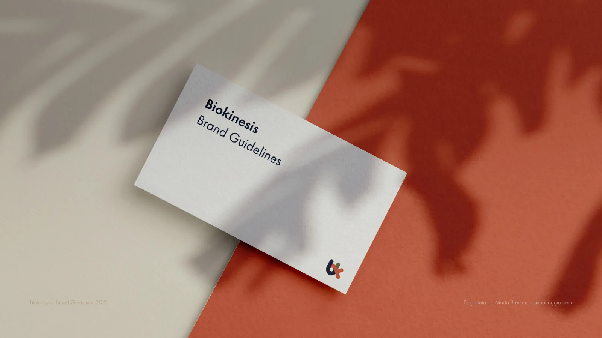
01 · Il progetto
Muoversi, curarsi, nutrirsi.
Biokinesis è un nuovo studio in Verbania dedicato al movimento, alla prevenzione e al benessere della persona, con un approccio integrato e su misura. Riunisce in un unico spazio tre discipline che lavorano insieme: il pilates con Sara Vianoli, chinesiologa e istruttrice pilates, la fisioterapia con Matteo Albertella e la nutrizione con Marco Borgotti.
Il nome unisce due parole greche: bios, la vita, e kinesis, il movimento. Racconta un'idea semplice: stare bene nel proprio corpo significa muoversi, curarsi e nutrirsi nel modo giusto.
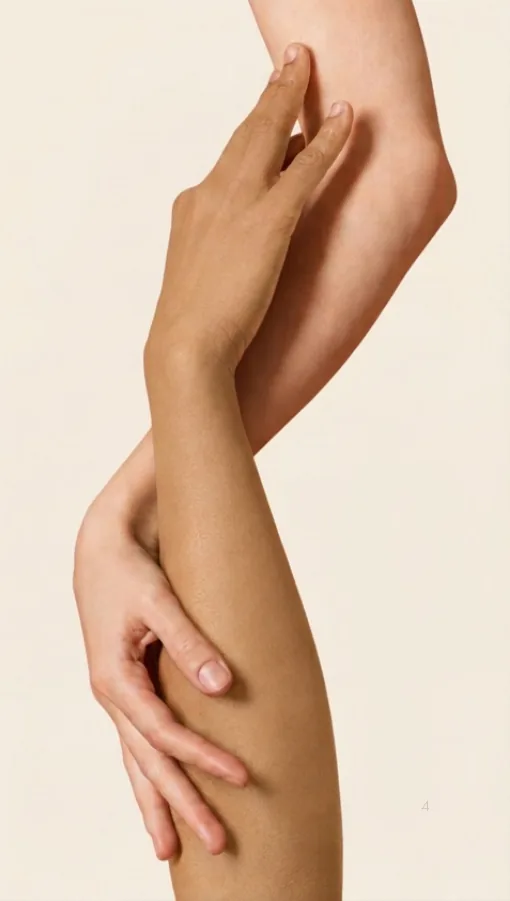
Una visione, più professionisti.
Il payoff esprime lo spirito dello studio: competenze diverse, uno sguardo comune sulla persona, e uno spazio aperto a nuove figure.
02 · Il logo
Vita e movimento, in un unico segno.
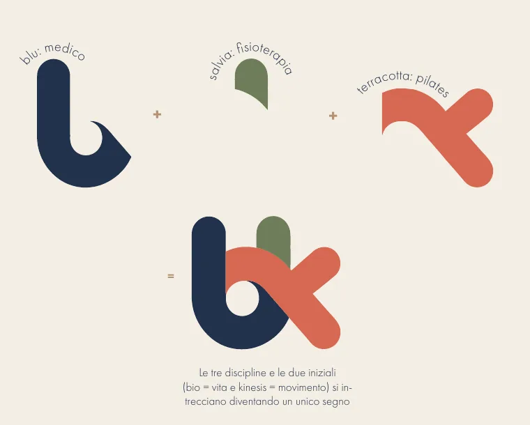
Il simbolo nasce dalle iniziali del nome: la b di bios, la vita, e la k di kinesis, il movimento. Le due lettere si intrecciano in un unico segno, come le discipline dello studio: ognuna mantiene la propria forma, ma insieme diventano una cosa sola.
Le forme sono piene e arrotondate, senza spigoli, per comunicare solidità e accoglienza insieme: la concretezza di un lavoro professionale e la cura verso la persona. La k si apre verso destra, in avanti, come un gesto in movimento.
I tre colori del simbolo (blu, terracotta e salvia) rappresentano i tre ambienti: sala pilates, studio di fisioterapia e studio medico, uniti da un'unica visione. Accanto al simbolo, il logotipo in Futura PT Bold, minuscolo, riprende le stesse forme geometriche e morbide, per un'identità moderna, chiara e riconoscibile.
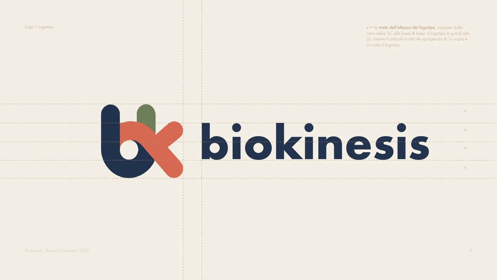
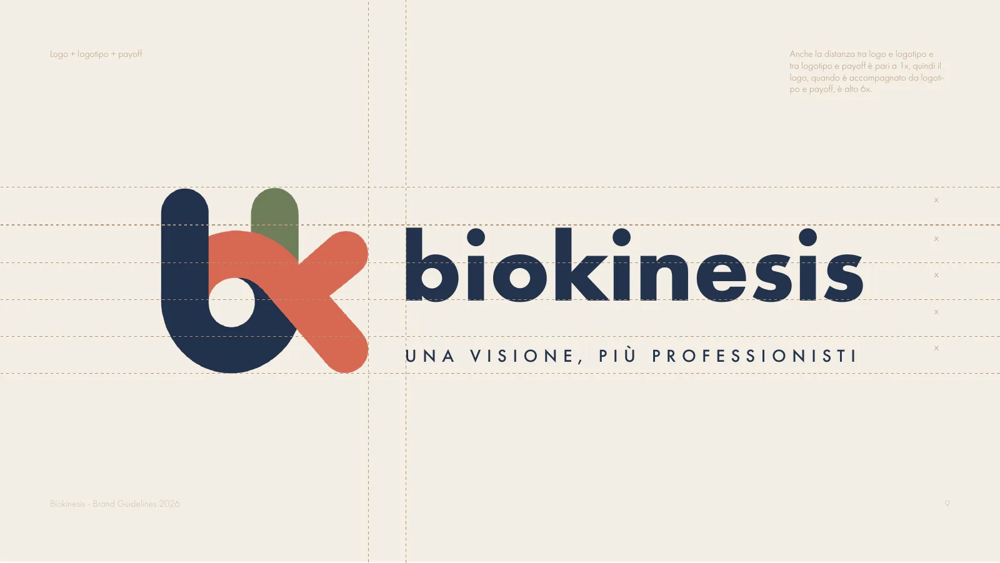
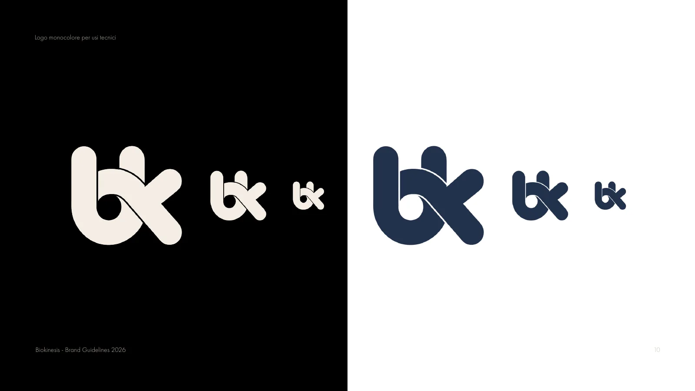
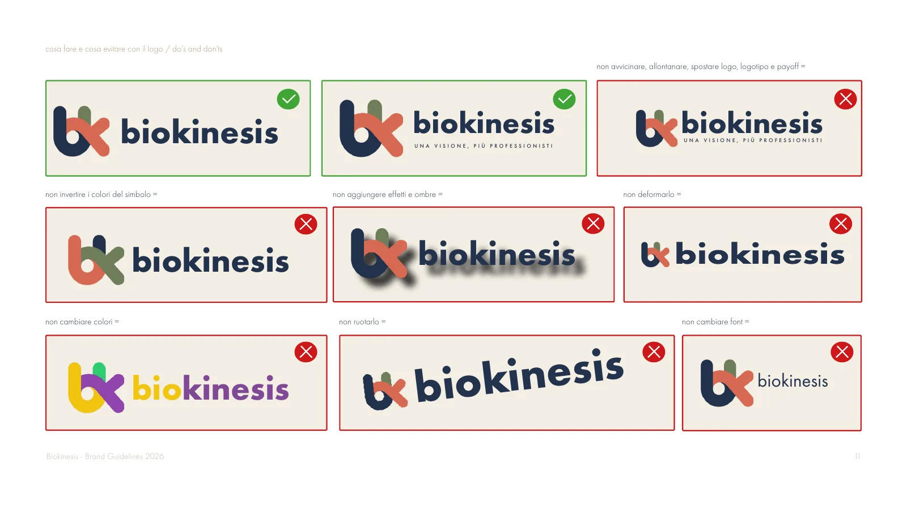
03 · Palette colori
La cura si vede anche nei colori.
La palette nasce dal progetto di interior design dello studio. I tre colori principali sono quelli dei tre ambienti: il blu profondo dello studio medico, il verde salvia della sala di fisioterapia e il terracotta della sala pilates, ripresi nelle tre parti del logo.
Accanto a loro, tre tonalità neutre richiamano i materiali degli spazi e, nel mondo digitale, diventano gli sfondi: il rovere degli arredi, il taupe del cemento e il crema della tinteggiatura sulle pareti. Così l'identità visiva e lo studio parlano la stessa lingua: chi riconosce il logo riconosce anche il luogo, e viceversa.
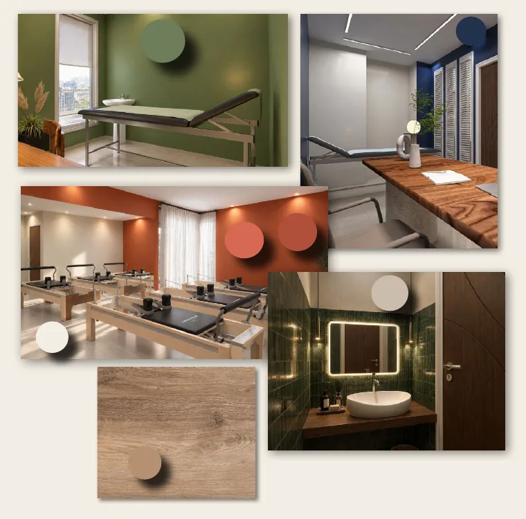
- Terracotta dark #B04F3A RGB 176 · 79 · 58
- Terracotta #D66952 RGB 214 · 105 · 82
- Deep blue #21314B RGB 33 · 49 · 75
- Sage green #6D7D59 RGB 109 · 125 · 89
- Cream #F4EEE4 RGB 244 · 238 · 228
- Taupe #C9BDAD RGB 201 · 189 · 173
- Oak #B59272 RGB 181 · 146 · 114
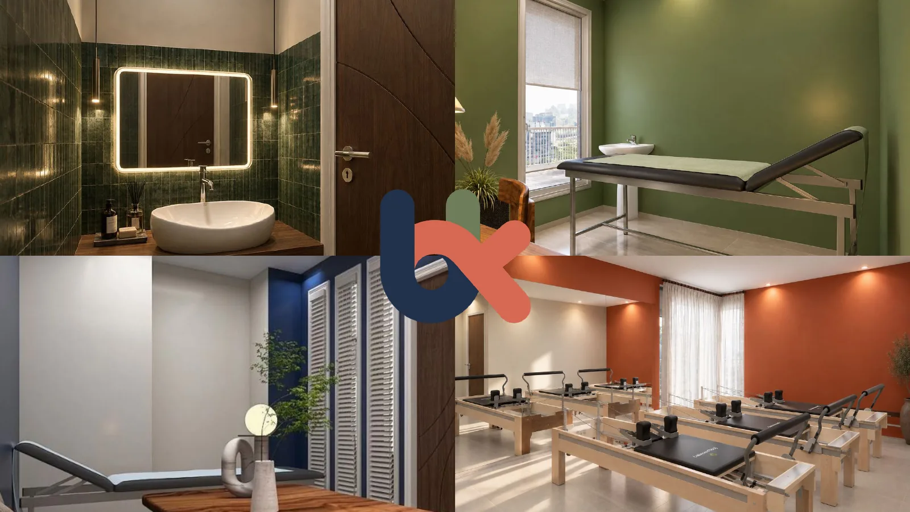
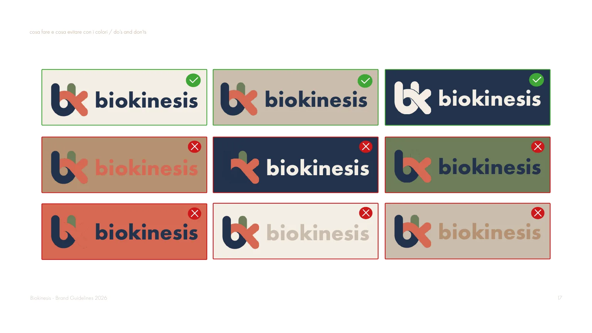
04 · Tipografia
Una voce sola, sempre riconoscibile.
Futura PT
Il carattere tipografico di Biokinesis è Futura PT, la versione digitale del Futura disegnato da Paul Renner nel 1927, negli anni del Bauhaus. Le sue forme nascono da cerchi, linee e triangoli: geometriche ma morbide, con le stesse curve piene e arrotondate del simbolo.
È un carattere moderno e senza tempo, chiaro da leggere e solido nella presenza, come uno studio che unisce precisione professionale e cura per la persona. Una sola famiglia, declinata in pesi diversi, dà a Biokinesis una voce coerente su ogni supporto: dal logo ai biglietti da visita, dal sito ai social. Per tutte le occasioni in cui manca il font Futura, utilizzare Jost che su Google Fonts è disponibile gratuitamente e ha le stesse proporzioni geometriche di Futura.
ABCDEFGHIJKLMNOPQRSTUVWXYZ abcdefghijklmnopqrstuvwxyz 0123456789
ABCDEFGHIJKLMNOPQRSTUVWXYZ abcdefghijklmnopqrstuvwxyz 0123456789
ABCDEFGHIJKLMNOPQRSTUVWXYZ abcdefghijklmnopqrstuvwxyz 0123456789
ABCDEFGHIJKLMNOPQRSTUVWXYZ abcdefghijklmnopqrstuvwxyz 0123456789
Il tuo benessere, in buone mani
Pilates, fisioterapia e nutrizione in un unico studio
Biokinesis nasce dall'incontro di tre professionisti che condividono la stessa idea di cura: seguire ogni persona nel suo percorso, dal primo movimento al recupero, fino alle abitudini di ogni giorno. Lezioni in piccoli gruppi, trattamenti personalizzati e consulenze nutrizionali lavorano insieme, perché il corpo è uno solo e merita uno sguardo completo.
Prenota la tua prova gratuita
Testo di esempio: titolo in Bold, sottotitolo in Medium, testo in Book. Qui reso con Jost.
06 · Applicazioni
Il brand in movimento.
L'identità di Biokinesis prende forma negli strumenti di ogni giorno. Logo, colori e tipografia si combinano in modo coerente su tutti i supporti, stampati e digitali: dai biglietti da visita dei professionisti, passando per badge, insegne e oggetti dello studio, fino ai profili social e sito web.
Ogni applicazione segue le regole di questo manuale: lo stesso logo, la stessa palette, la stessa voce. In questo modo, ovunque si incontri, Biokinesis è subito riconoscibile.
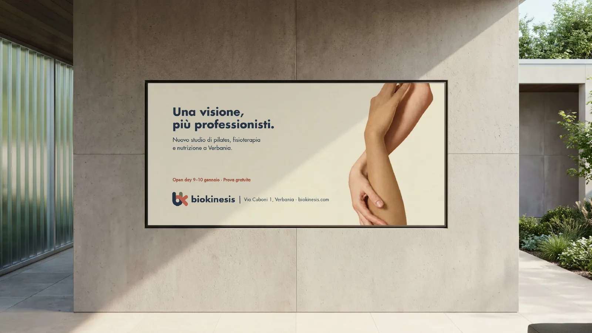
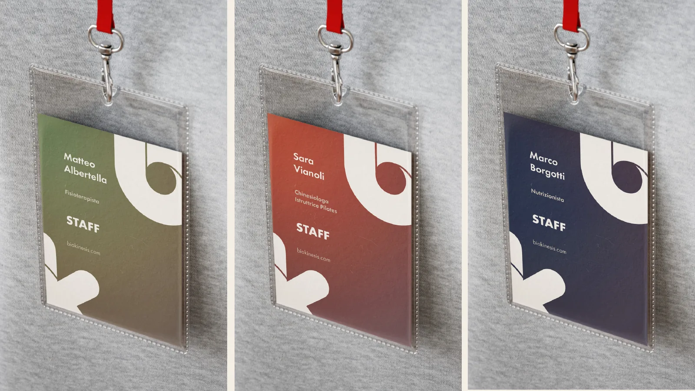
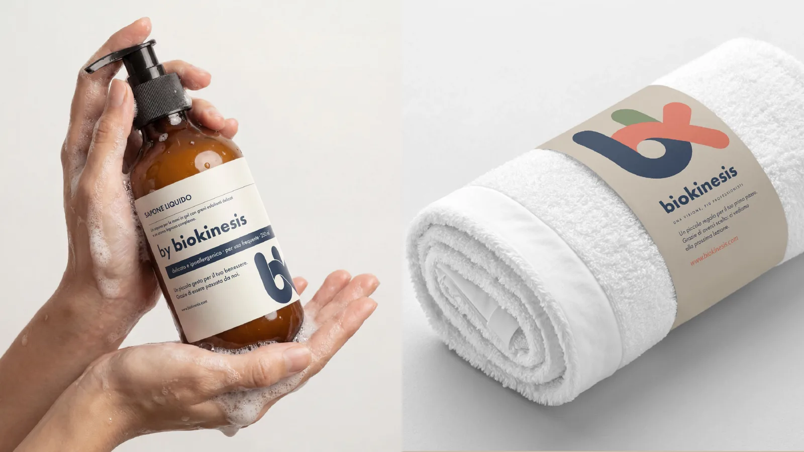
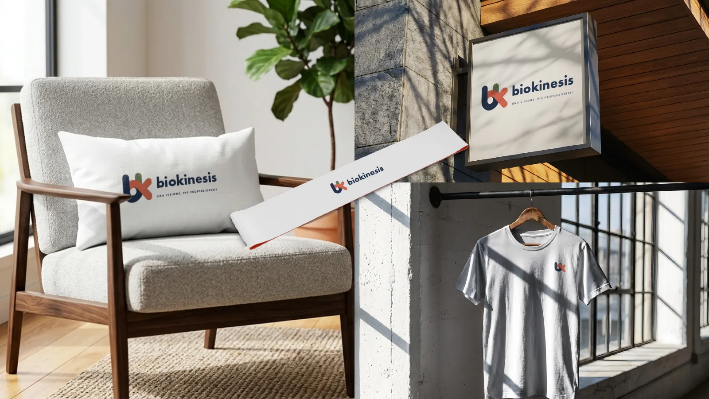
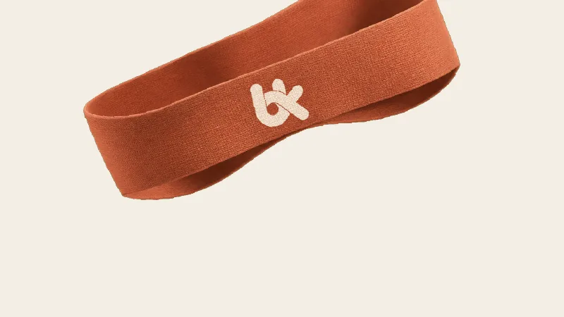
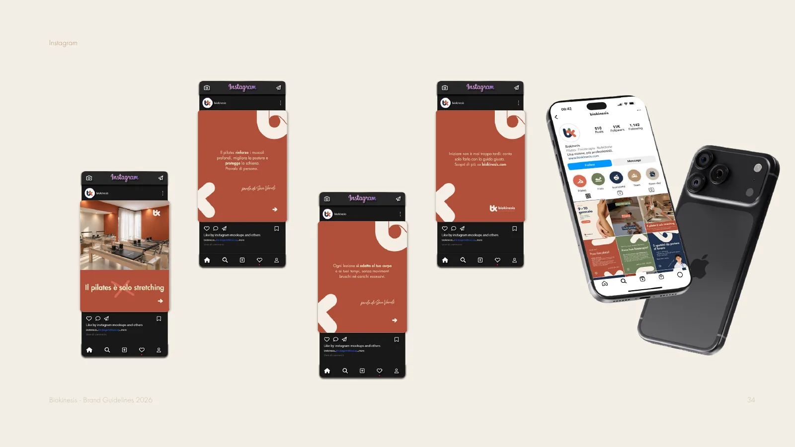
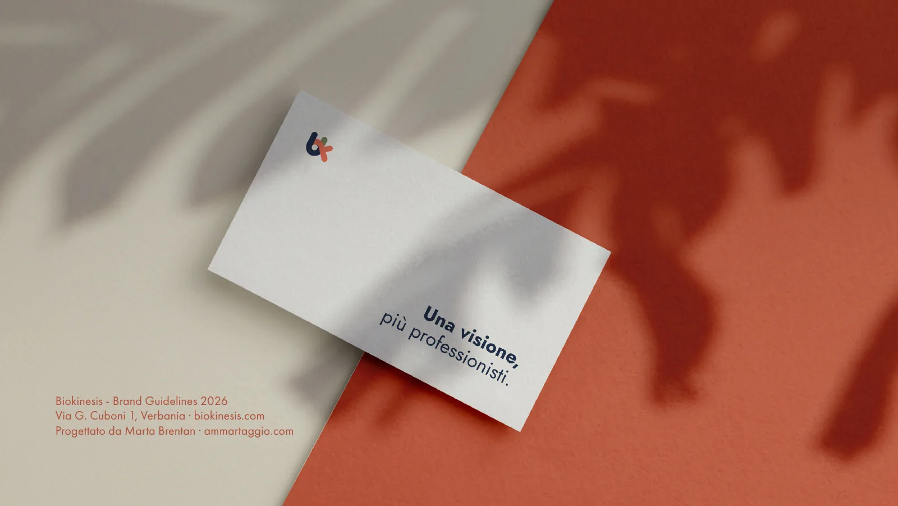
Tre sguardi diversi, una sola persona al centro.